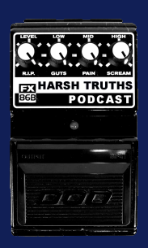

Performances Releases Store
Biography Pictures / Flyers Interviews
Artwork Reviews Contact

WCN Podcast #12
Kate Rissiek of RUSALKA on sound sources, touring,
Vancouver noise and her visual art.
Harsh Truths Podcast
Posted March 19th 2020
MY GOAT: Can you tell us a little bit about any themes and concepts behind your punishing live performance at the EYES BEHIND THE WALL festival? What were you feeling while delivering such brutality upon the people of Houston?
KATE RISSIEK: I was very happy to have the opportunity to perform at Eyes Behind The Wall. I approach every performance in a similar way. I don't over think my ideas and concepts. I had a very abstract idea of the set which I wanted to perform in Houston. Yet the sound always take it's own shape. While being there I was quite overwhelmed by the heat and humidity. When I performed I was eager to emerge beyond the physical oppression and immerse myself and hopefully others in a realm outside ourselves. That is my goal with a lot of performances. To create a space to move into that takes me far away.
MG: Do you feel a kinship with the water and murky depths sort of vibes with RUSALKA, or is the identification with the Slavic spirit more to do with a feeling of hauntedness and desolation?
KR: I identify with the Rusalka myth in a number of ways. The spirit that is trapped between two worlds, the living and dead, expresses to me tortured and confused feelings. The murky waters in which she dwells influences the sound. I have always loved lakes, rivers, the ocean, any natural water formations and the sounds they make. The feeling of water I find quite haunting. Floating and feeling the vastness of a lake or body is hypnotizing. A Rusalka can be a woman who is a damned spirit killed by a lover. She can also be an unstoppable force consuming life in her path or a lonely spirit unjustly punished. Revenge, lust, desolation, worlds between life and death are all themes takes from the various myths. I can feel these spirits through me, channeling their revenge on world that cursed them.
MG: The photographs on your music page of desolate forest and city images go very well with the themes and feeling of the sounds that you make... often to the extent of painting the modern world in a desolate post-apocalyptic light... Do you consider your work to be futuristic, even reflecting a possible future?
KR: I definitely strive to reflect upon the future in my work. I have a bleak outlook with possibly a glimmer of hope which usually becomes smothered. I used to let negative feelings about the world eat me up inside. Through art and noise I found the outlet to express that discontentment and take destructive thoughts into a creative place. I use post apocalyptic themes in my work for sure. I sometimes imagine a place and time where very little has survived and all the trivial things we have to worry us currently are meaningless. Some of my pieces could be the soundtrack to an empty and destroyed world.
MG: Names of your recordings often deal with images that are visceral and express physicality... how does this relate to emotion and catharsis that you feel in regard to recording, composition, and live performance?
KR: Recording and performing can be a purge of unbearable emotions that I feel plagued by. It is important to me to take the thoughts inside that are grim, destructive, negative, offensive and to present them in a creative way. To hold these inside or deny them is not healthy. I feel that if you do not know the dark and ugly parts of yourself then you do not know your whole self. So I embrace these things. I work with these themes and present them to people who I believe can feel and understand where I am coming from. I sometimes feel trapped in daily life and when I am making noise it is an escape, a place for me to feel open.
MG: Your collage art ties in very beautifully with your musical work, how closely are they tied together? Did your interest in collage lead you in any manner to noise, or vice versa, etc?
KR: I've been doing collage art work since I was a teenager. I always liked to use strange imagery. I used to drive my parents crazy with all the weird and obscene pictures I had lying around my room that I would work with. Collage is abstract like noise so it seems natural that I would be attracted to noise as well. The approach to noise and collage is the same for me. I usually have a vague plan of what I want as an end result. I have my materials and see where they take me. They are very parallel in their expression. Mashing together broken and cut up fragments into a chaotic beauty. I don't think one led me to the other but they work quite nicely together and I have some design ideas for future releases.
MG: The main image on your art page is an obsessively intricate and textured collage of garbage bags and trash... I feel that this is an excellent visual image to represent to people the value of harsh noise and harsh noise wall music... the detritus and excess of our society can be stitched into something beautiful by the trained crafts person... I am reading too much into this?
KR: That collage of trash is a piece I made with my partner Nick (Taskmaster). We made it for a show poster. I played along with Kylie Minoise, The Rita, Taskmaster, Flatgrey and Anju Singh. I knew I was going to make a collage for the poster but I was stuck on what to use. Nick found this great picture of trash and remarked on how it would be perfect to express what the show was about. It is a very good representation of the wall of debris we are faced with and turn into our personal expression.
MG: How do you feel what we are doing with noise events, releases etc... relates to the larger world of "music" as a whole?
KR: I am not really concerned with the effect that noise has on the world of music. Yet I think that noise challenges popular music in a few ways which are beneficial. For me noise is a formless art, it doesn't conform to traditional standards. There is always conformity in any art form yet there are artists that shine through who aim to create in a truly personal way. Noise allows the artist the freedom to produce in an environment with no specific expectations and with no lines clearly drawn. Noise events allow audiences to participate in and experience something that may open their minds to alternative ways of creation. There is no money in noise. There is no groupies or fame. People do consume noise but there isn't hyper capitalistic marketing like a lot of popular music. Image is not important. The importance in noise is the worship of sound and the experiences we create with it. For the most part I think the world of “music” is confused by noise and noise remains indifferent. I am personally satisfied by indulging in the obsession of noise and filling an audiences need for it.
MG: How important do you feel it is for noise artists to travel to other places and perform live? Can you tell us a bit about how travelling has affected your approach to making RUSALKA, if at all?
KR: I am not sure if I feel it is important for other artists to travel and perform. Personally though traveling to perform is something I thoroughly enjoy and wish that I could do more. It has definitely effected my approach. Each performance for me is an individual piece. As with improvisation one performance is never the same as the other. The setting of the show, the mood, the audience, the time, all those specifics determine the sound of the pieces. The live setting is where I derive the most enjoyment of noise, performing and being an audience member. I would much rather play live than record an album. I also mostly listen to noise albums from artists I have seen. I find that I get a much greater connection with an artist's work when I see how they do things live. Through mistakes and meanderings while performing I discover new things that I explore further. It is about being in the now and that is why performing is very important to me. Noise is existential for me and that is where it's power lies.
MG: RUSALKA walks a fine line between mystical and tersely physical imagery. How do you feel about the relationship between these two?
KR: There is conflict in my work. Conflict between transcendence and obsessive crude trappings. Perhaps I look for a balance between both. With out one end you don’t have the other. I can find beauty and enjoyment in ugly and depraved subject matter. Aesthetically I like contrast. Most of the imagery I use can be quite veiled. I’m not sure where the inspiration comes from. Most of the time like the music it is subconscious.
MG: Thank you very much for your time. Is there anything else that you would like to tell the people?
KR: Thank you for interest in my work. There is a blog for the new label I’m involved with: skinwalker-recordings.blogspot.com. I also have a project called Monarch with Nick W. (Taskmaster). It is a new industrial/noise project that we will become more active with in the future. So check it out if you get the chance.
Thank you to RUSALKA for the interview and the great music.
Posted by Joseph Gates